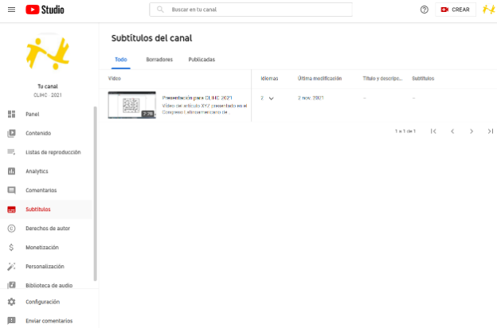
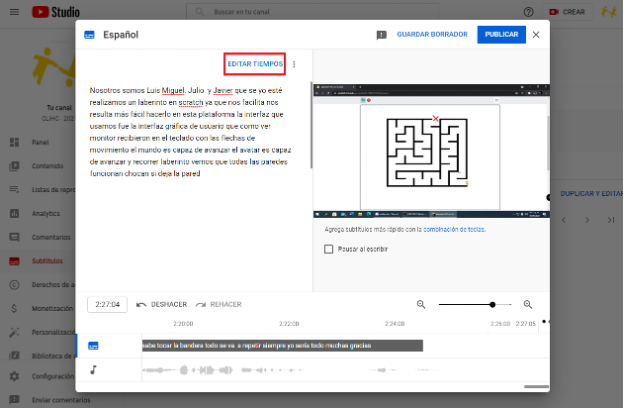

El subtitulado automático de YouTube es una función generada a partir de algoritmos de aprendizaje automático. A pesar de las frecuentes inversiones de YouTube en tecnologías de reconocimiento de voz, los subtítulos automáticos no siempre reproducen los diálogos correctamente y pueden mostrar inconsistencias debido a variaciones en la pronunciación de las palabras, acentos, dialectos o ruido de fondo (Fuente: Ayuda de YouTube).
Este tutorial presenta una guía paso a paso sobre cómo crear subtítulos de calidad a partir de una combinación: subtítulos automáticos proporcionados por YouTube y correcciones manuales realizadas en YouTube Studio. Para utilizar los servicios de YouTube es fundamental crear una cuenta o vincular su cuenta de correo electrónico a Google. Una vez que haya creado / vinculado su cuenta, siga las pautas a continuación.
- Vaya a YouTube: https://www.youtube.com/
-
Inicie sesión en su cuenta de Google yendo al botón "Acceder" en el área superior derecha de la pantalla.
Pantalla de inicio de YouTube: botón “Acceder”.
-
Envíe el video a ser subtitulado, accediendo al botón "Crear", representado visualmente por un ícono de cámara con un signo "+", ubicado en el área superior derecha de la pantalla y luego "Subir vídeo".
Pantalla de inicio de YouTube: subir video.
-
Si este es el primer envío de video en YouTube, el sistema le pedirá que cree el canal:
Seleccione "Crear un canal". Al crear el canal, es posible insertar una imagen y un nombre que represente su canal. Después de proporcionar dicha información, nuevamente seleccione “Crear canal”.
Menú con la opción crear un canal
-
Sube el video seleccionando el botón "Subir vídeo".
-
Es posible que, por ser primera vez, se muestre una ventana sobre YouTube Studio. Podrá acceder al botón "Más información" para obtener información adicional sobre la función o hacer clic fuera de la ventana para cerrar la advertencia. Si accede por teclado, la ventana se puede cerrar presionando la tecla "ESC".
Haga clic en el botón "Seleccionar archivos", se abrirá una ventana para que usted seleccione el vídeo a subtitular.
Ventana con botón para seleccionar el vídeo
-
Luego de seleccionar el video, debe completar los detalles del video, como "título", "descripción", entre otros.
Ventana para completar los detalles del video
Tenga en cuenta que es esencial indicar si el contenido está destinado a niños antes de continuar con el envío del video. Este es un requisito de la Comisión Federal de Comercio de EUA (FTC, por sus siglas en inglés) en cumplimiento de la Ley de Protección de la Privacidad Infantil en Línea (COPPA, por sus siglas en inglés), cuya responsabilidad de garantizar el cumplimiento se asigna a los autores de los videos enviados en YouTube (Fuente: Ayuda de YouTube). La página de ayuda de YouTube, solo se deben considerar para niños los videos con las siguientes características:
- El foco del video es la audiencia de los niños.
- Los niños no son el foco, pero el contenido aún está dirigido a los niños porque presenta actores, personajes, actividades, juegos, música, cuentos y otros temas dirigidos a los niños.
Incluso si su video es seguro y adecuado para cualquier grupo de edad (es decir, no aborda temas sexuales, violentos u obscenos), solo indique que está destinado a niños si cumple con los requisitos antes mencionados. En todas las demás situaciones, indique la opción "No, no es contenido para niños". Para obtener más información sobre cómo determinar si el contenido de un video es para niños, consulte la documentación de YouTube.
Debajo de esta última opción, donde se muestra la leyenda "Mostrar más", de clic
Activando "Mostrar más" en los detalles del video
-
Cuando el enlace está activado, se muestran otras opciones, incluidas las opciones de subtítulos. Vaya a la sección "Idioma y certificación subtítulos" e indique el idioma utilizado en la presentación en el campo "Idioma del video".
Indicación del idioma de presentación, en este caso, "Español (México)".
-
Después de completar todos los detalles, seleccione el botón "Siguiente".
Continúe después de completar los detalles.
En "Elementos de video", puede incrustar un subtítulo que haya sido creado previamente. Como el propósito de este tutorial es guiarlo a través del uso de los subtítulos automáticos de YouTube, debe omitir la adición de subtítulos en este paso y seleccionar el botón "Siguiente" para continuar.
Adelante sin agregar subtítulos.
En la verificación, la plataforma analizará si el vídeo enviado viola los derechos de autor. Después de las comprobaciones, seleccione el botón "Siguiente" para continuar.
Importante: no todas las situaciones son detectables por los algoritmos de escaneo de YouTube, pero es esencial que los vídeos producidos contengan material protegido por derechos de autor, que no infrinja los derechos de terceros, por ejemplo, con canciones de fondo, extractos de videos, imágenes y otros elementos sin autorización para su uso por parte del autor.
Adelante sin agregar subtítulos.
-
Aplicar la configuración de visibilidad, indicando el nivel de acceso al video que se subtitulará. Se recomienda seleccionar la opción "Privado" para que el video producido sea inédito en el evento.
Indica que el video es privado.
-
Seleccione el botón "Guardar" para terminar de enviar el vídeo.
Guarde y complete el envío del vídeo.
-
Después de enviar el video, estará disponible en la lista de contenido del canal. Debe esperar un poco, que puede variar de minutos a horas, hasta que YouTube ponga a disposición la subtitulación automática.
El vídeo aparece como contenido del canal.
-
Accede al área de "Subtítulos" del canal, ubicada en el menú de la izquierda.

Área de subtítulos en el menú de la izquierda.
-
En la lista de videos, seleccione el ícono de "flecha hacia abajo", vinculado a "Idiomas", para mostrar los subtítulos generados para el video.
Expanda las opciones de idioma.
Nota: los procedimientos indicados en este tutorial no se han probado mediante la interacción compatible con el software lector de pantalla; sin embargo, como esta guía utiliza referencias visuales, verificamos cómo este software daría acceso a este icono. En tales casos, el vínculo se identifica mediante "expandir / contraer cuadro de idioma, botón".
-
En la opción "Español (automático)”, acceda al enlace "Duplicar y editar", para crear un título personalizado.
Subtítulo duplicado generado automáticamente por YouTube.
Cualquier subtítulo generado automáticamente se mostrará en la pantalla. Debe seleccionar "Editar tiempos" para realizar ajustes manuales.

Edite tiempos para corregir errores en los subtítulos automáticos.
-
Se activará la pantalla de edición y los subtítulos creados se podrán ajustar en cada parte del vídeo, si es necesario. También puede crear nuevos rangos de subtítulos, si estos no están sincronizados con el discurso en el video.
Importante: al crear subtítulos, use un máximo de dos líneas de texto para brindar al espectador una experiencia de visualización más cómoda. Además, tenga en cuenta el intervalo de tiempo de exposición para evitar subtítulos demasiados rápidos o demasiados lentos. Este tiempo depende de varios factores, como la velocidad del habla, la cantidad de palabras, entre otros. Se recomienda una media de 3 segundos para exponer un subtítulo (Fuente: ABNT NBR 15290: 2016).
Herramienta que permite editar texto y tiempos marcados.
La herramienta también permite disparar el vídeo para facilitar el proceso de corrección. De manera opcional, puede seleccionar la opción "Pausar al escribir", para evitar que la reproducción del vídeo avance cuando se identifican correcciones.
-
Después de terminar los ajustes, haga clic en el botón "Publicar".
En la herramienta, puede configurar pausas mientras escribe.
-
Para descargar el título en formato SRT, haga clic en el elemento "opciones" en el primer elemento de título presentado en la lista. El elemento "opciones" no se muestra directamente. Para acceder a él, debe pasar el mouse al lado del enlace "Editar" o realizar la navegación del teclado (a través de la tecla "TAB"). El elemento "opciones" está representado visualmente por tres pequeños puntos verticales, como se ilustra en la siguiente figura.
Activación del botón "Publicar" al finalizar los ajustes.
-
Después de activar las opciones, seleccione "Descargar" y luego "SRT".
Pasos para la generación de subtítulos.
Importante: antes de exportar el título, asegúrese de que sus ediciones manuales hayan generado un título sincronizado.
Nota: en caso de que necesite hacer más ajustes, YouTube le permite volver a editar el subtítulo después de la publicación.
If you have placed your submission yet, we invite you to follow the steps below to
register your submission.
In case you need to update any information about your submitted abstract/ paper, you can
access the top right one or more links available: “Update information”, “Update
authors”, “Add file” or “Withdraw”, as it is shown in Figure 2.
Please, let us know if you still have any doubts by sending us an email to clihc2021@gmail.com